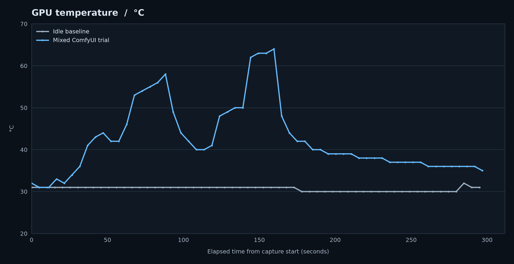
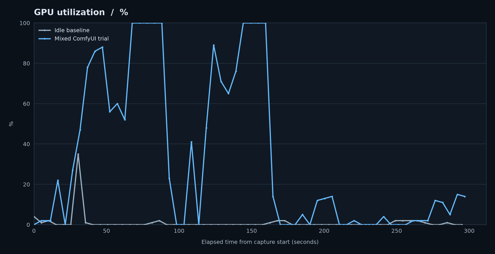
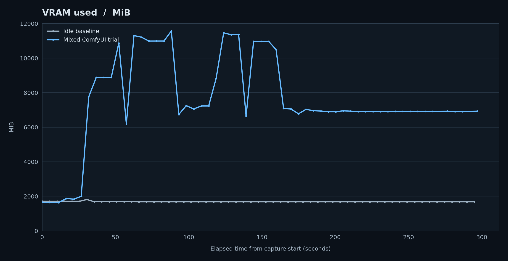
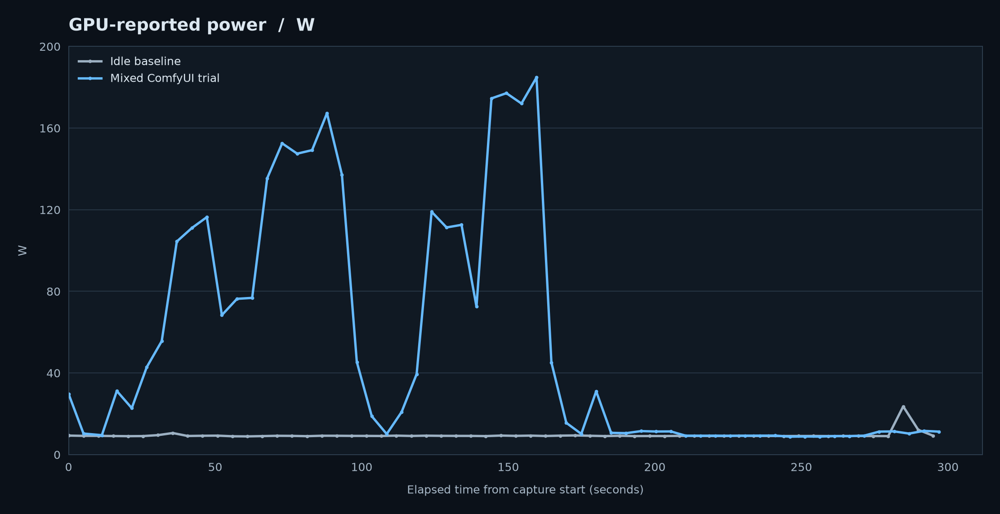

Recorded in telemetry
UTC timestamps, GPU name, driver version, temperature, utilization, used/total VRAM and driver-reported GPU power. Both captures passed the published data checks.
FIELD REPORT / 001 · OCTOBER 2026
Idle baseline and initial mixed-workload telemetry evaluation. The report and source data distinguish what the sensor recorded from what the operator reported.
THE RESULT, IN SCOPE
The mixed capture contains much higher sampled GPU activity, memory use, temperature, and GPU-reported power than the idle-labeled baseline. Its 59 observations span about five minutes and include non-generation intervals.
Peak readings are individual samples. GPU-reported power is not wall power; the telemetry does not measure image speed, output quality, or sustained stability.
INTERACTIVE TELEMETRY
Data loads from the exact public CSV copies linked below. Select a metric and capture; use a pointer or the arrow keys to inspect samples and timestamps.
Capture elapsed time starts at zero separately for each file. Means in the table are arithmetic sample means across the complete capture, not time-weighted or generation-only.
FULL-CAPTURE STATISTICS
Each CSV contains 59 valid samples for all four measures. The baseline is owner-labeled and includes brief GPU activity, so it was not completely inactive.
| Metric | Idle mean | Idle peak | Mixed mean | Mixed peak |
|---|---|---|---|---|
| Temperature | 30.66 °C | 32 °C | 42.44 °C | 64 °C |
| GPU utilization | 1.03% | 35% | 33.22% | 100% |
| VRAM used | 1,687.46 MiB | 1,815 MiB | 7,540.88 MiB | 11,571 MiB |
| GPU-reported power | 9.51 W | 23.64 W | 54.84 W | 184.81 W |
WHAT WAS — AND WAS NOT — ESTABLISHED
A useful technical report does not turn a handful of sensor values into claims they cannot support.
UTC timestamps, GPU name, driver version, temperature, utilization, used/total VRAM and driver-reported GPU power. Both captures passed the published data checks.
Two ERNIE Image Turbo image generations were reported complete during the mixed trial. No screenshot, output or app-history record was supplied, so completion is not independently verified.
Generation times, workflow/model hashes, output evidence, resolution, ambient conditions, clock/fan behavior, CPU/RAM load, wall power, repeat-run variation and sustained behavior.
The evidence supports an initial short mixed-session telemetry evaluation. It does not establish throughput, thermal equilibrium, long-term stability, or a completed endurance benchmark.
STATIC SOURCE-DERIVED CHARTS
Dark-theme charts are regenerated from the preserved CSVs; raw files and the integrity manifest remain available above.



